Quick Navigation & Topic Roadmap
Linear Algebra modern Artificial Intelligence, Machine Learning, Data Science, aur Computer Graphics ki mathematical backbone hai. Niche diye gaye roadmap se kisi bhi section par direct jump karein:
0. Opening Story: A Shop's Sales Calculator
Maan lijiye aap ek retail electronics shop chalate hain. Aaj aapke store par 3 major items biki hain:
- Wireless Earbuds: 10 units @ ₹20 each
- Fast Chargers: 5 units @ ₹50 each
- USB-C Cables: 8 units @ ₹30 each
Agar aapko total dukaandaari (total daily revenue) calculate karni ho, toh traditional tareeka kya hoga? Har item ka individual revenue nikalna: (10 * 20) + (5 * 50) + (8 * 30) = 200 + 250 + 240 = 690. Yeh simple arithmetic asal me Linear Algebra ka Dot Product hai!
q = [10, 5, 8] aur prices ko ek Price Vector p = [20, 50, 30] ke roop me store karte hain. Linear algebra in do lists ko single vectorized operation me multiply karke total revenue compute kar deta hai!
Python Execution: Opening Sales Calculator
Dekhiye kaise NumPy me element-wise multiplication aur summation se total revenue calculate hota hai:
import numpy as np quantities = np.array([10, 5, 8]) prices = np.array([20, 50, 30]) # Step 1: Element-wise multiplication calculates revenue per product product_revenue = quantities * prices # Step 2: Summation computes overall store revenue total_revenue = np.sum(product_revenue) print("Quantities: ", quantities) print("Prices: ", prices) print("Revenue by product:", product_revenue) print("Total revenue: ", total_revenue)
Line-by-Line Breakdown
quantities = np.array([10, 5, 8]): 1D array (vector) of length 3 jisme har item ki bikri hui units hain.prices = np.array([20, 50, 30]): 1D array (vector) of length 3 jisme har item ki unit price hai.product_revenue = quantities * prices: NumPy ka vectorized element-wise multiplication:10*20=200,5*50=250,8*30=240. Ek single line me bina for-loop ke pura table multiply ho gaya!total_revenue = np.sum(product_revenue): Saari product revenues ko add karke final₹690dukaandaari nikal li.
A. Scalars, Vectors, and Matrices
Linear algebra me data ko unke dimensions ke basis par 3 fundamental structures me classify kiya jata hai:
- Scalar (0D): Ek single numerical value (jaise
5ya3.14). Iska koi direction ya dimension nahi hota. NumPy mendim == 0, shape(). - Vector (1D): Numbers ki ek 1D list/sequence. Iska ek length (magnitude) aur orientation hota hai. NumPy me
ndim == 1, shape(n,). - Matrix (2D): Rows aur Columns ka ek 2D rectangular grid. Data tables, images, aur multivariable datasets matrix hote hain. NumPy me
ndim == 2, shape(m, n).
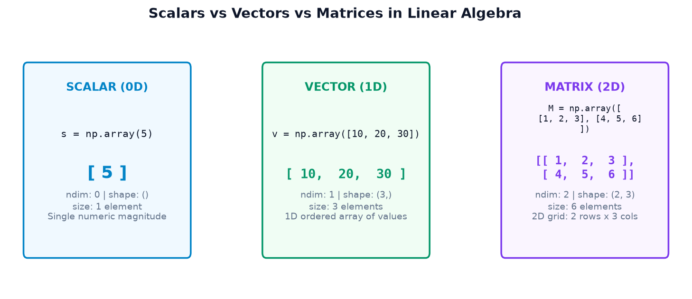
Example 1: Inspecting ndim, shape, and size in NumPy
import numpy as np scalar = np.array(5) vector = np.array([10, 20, 30]) matrix = np.array([ [1, 2, 3], [4, 5, 6] ]) print("Scalar: ", scalar, "| Shape:", scalar.shape, "| ndim:", scalar.ndim, "| Size:", scalar.size) print("Vector: ", vector, "| Shape:", vector.shape, "| ndim:", vector.ndim, "| Size:", vector.size) print("Matrix:\n", matrix) print("Matrix shape:", matrix.shape, "| ndim:", matrix.ndim, "| Size:", matrix.size)
Example 2: Real-World Multi-Store Weekly Sales Matrix
Maan lijiye hamare paas 3 alag-alag stores (Downtown, Suburb, Mall) hain aur hum Monday se Thursday (4 din) ki daily sales track kar rahe hain:
import numpy as np # Rows = 3 Stores (Downtown, Suburb, Mall) # Cols = 4 Days (Mon, Tue, Wed, Thu) sales_matrix = np.array([ [120, 150, 130, 180], # Store 0: Downtown [200, 210, 190, 240], # Store 1: Suburb [90, 110, 105, 130] # Store 2: Mall ]) print("Sales Matrix:\n", sales_matrix) print("Dimensions (ndim):", sales_matrix.ndim) print("Shape (rows, cols):", sales_matrix.shape) print("Total data points:", sales_matrix.size)
vector = np.array([10, 20, 30]) ka shape (3,) hota hai. Yeh na toh (1, 3) row matrix hai aur na hi (3, 1) column matrix! Agar aapko explicit row vector chahiye toh vector.reshape(1, 3) karein, aur column vector chahiye toh vector.reshape(3, 1) ya vector[:, np.newaxis] karein.
B. Matrix Addition and Subtraction
Do matrices ko add ya subtract tabhi kiya ja sakta hai jab unka shape bilkul same ho. Addition aur subtraction element-wise (position by position) perform hota hai.
\[ C_{ij} = A_{ij} + B_{ij} \]
Yani result ke \((i, j)\) position par wahi number aayega jo \(A\) aur \(B\) ke \((i, j)\) position wale numbers ka sum hoga!
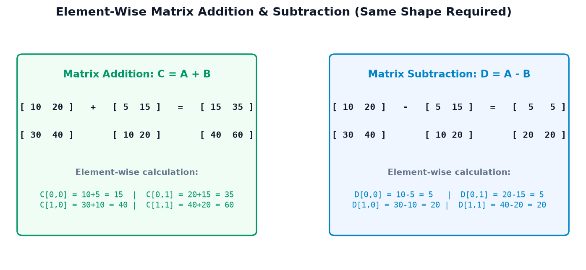
Example 1: Combining Multi-Store Weekly Sales
import numpy as np store_a = np.array([ [10, 20], [30, 40] ]) store_b = np.array([ [5, 15], [10, 20] ]) combined_sales = store_a + store_b sales_difference = store_a - store_b print("Combined Sales (A + B):\n", combined_sales) print("Sales Difference (A - B):\n", sales_difference)
Example 2: Warehouse Inventory Delta Tracking
Warehouse me subah stock tha morning_stock aur sham ko delivery aane ke baad stock hua evening_stock. Inventory me kitna net change (delta) aaya:
import numpy as np # 2 categories x 2 warehouses morning_stock = np.array([[50, 80], [120, 45]]) evening_stock = np.array([[70, 65], [120, 90]]) inventory_delta = evening_stock - morning_stock print("Morning Stock:\n", morning_stock) print("Evening Stock:\n", evening_stock) print("Stock Delta (Evening - Morning):\n", inventory_delta)
+20: Warehouse [0,0] me 20 units stock badha (Restocked).-15: Warehouse [0,1] me 15 units kam hui (Net Sales hui).0: Warehouse [1,0] me stock unchanged raha.
C. Scalar Multiplication and Element-Wise Multiplication
Beginners aksar Scalar Multiplication, Element-Wise Multiplication (*), aur Matrix Multiplication (@) me confuse ho jate hain. Aaiye pehle do operations ko crystal clear karein:
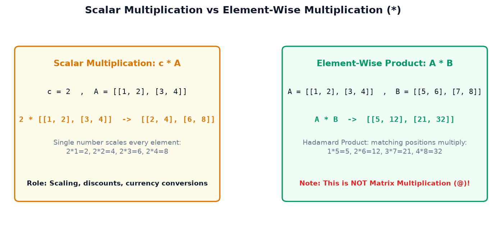
1. Scalar Multiplication
Jab aap kisi vector ya matrix ko ek single number (scalar) se multiply karte hain, toh matrix ka har ek element us number se scale (multiply) ho jata hai:
import numpy as np prices = np.array([100, 200, 300]) discount_rate = 0.10 # Scalar (1 - 0.10 = 0.90) scales entire prices array discounted_prices = prices * (1 - discount_rate) print("Original prices: ", prices) print("After 10% discount:", discounted_prices)
2. Element-Wise Multiplication (Hadamard Product, *)
Jab do same shape wale matrices ke beech asterisk operator (*) lagaya jata hai, toh NumPy position-by-position matching elements ko multiply karta hai. Is operation ko mathematics me Hadamard Product kehte hain:
import numpy as np a = np.array([ [1, 2], [3, 4] ]) b = np.array([ [5, 6], [7, 8] ]) elem_product = a * b print("Matrix A:\n", a) print("Matrix B:\n", b) print("Element-wise A * B:\n", elem_product)
A * B matrix multiplication nahi karta! Yeh sirf matching positions ko multiply karta hai: 1*5=5, 2*6=12, 3*7=21, 4*8=32. True Linear Algebra matrix multiplication ke liye @ ya np.matmul() ka use kiya jata hai!
D. Matrix Multiplication: @, np.matmul(), and np.dot()
Matrix multiplication linear algebra ka sabse critical aur powerful concept hai. Yeh element-wise product se bilkul alag hota hai kyunki isme Row of A aur Column of B ka dot product liya jata hai!
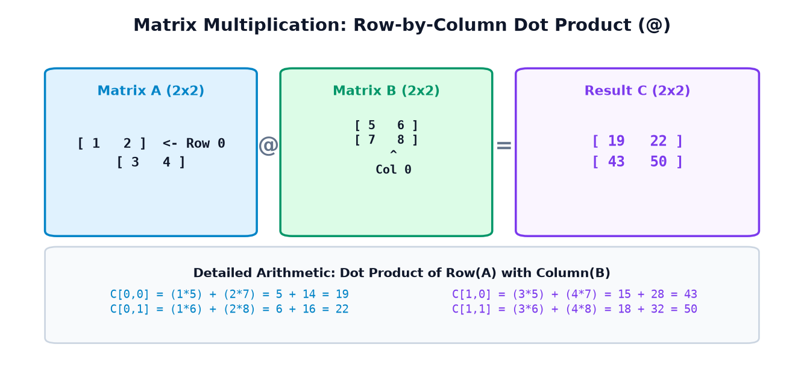
The Dimension Compatibility Rule
Do matrices \(A\) aur \(B\) tabhi multiply ho sakte hain jab \(A\) ke Columns aur \(B\) ki Rows exactly equal hon:
- Inner Dimensions: Dono ka
nbarabar hona chahiye! (Columns of A == Rows of B). - Outer Dimensions: Resulting matrix ka shape
(m x p)banega!
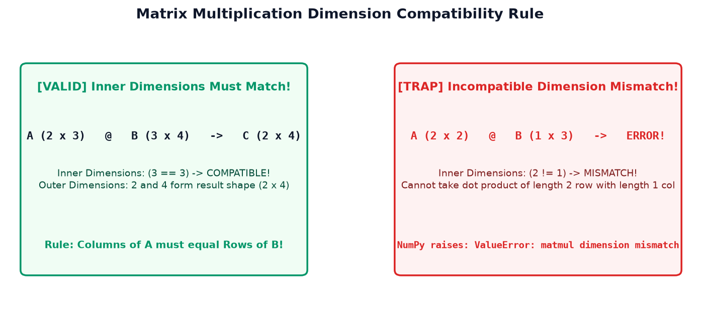
Example 1: Multiplying Two 2x2 Matrices
import numpy as np a = np.array([ [1, 2], [3, 4] ]) b = np.array([ [5, 6], [7, 8] ]) print("Using @ operator:\n", a @ b) print("Using np.matmul: \n", np.matmul(a, b)) print("Using np.dot: \n", np.dot(a, b))
Example 2: Multi-Store Sales Quantities & Product Unit Prices
Maan lijiye 3 stores (Downtown, Suburb, Mall) ne 3 products beche hain. Hamare paas ek (3 x 3) quantity matrix hai aur ek (3,) price vector hai:
import numpy as np # Q shape: (3, 3) -> 3 stores x 3 products Q = np.array([ [10, 5, 8], # Store 0 [15, 8, 12], # Store 1 [8, 10, 6] # Store 2 ]) # P shape: (3,) -> 3 product unit prices P = np.array([20, 50, 30]) # Matrix multiplication: (3 x 3) @ (3,) -> (3,) store_revenues = Q @ P print("Quantity Matrix Shape:", Q.shape) print("Price Vector Shape: ", P.shape) print("Store Revenues Result :", store_revenues) print("Result Shape: ", store_revenues.shape)
@, np.matmul(), aur np.dot() identical result dete hain. Lekin 3D ya higher-dimensional arrays (jaise batches of images ya neural network tensors) me:
np.matmul()/@batched matrix multiplication karta hai (akhiri do axes ko multiply karta hai).np.dot()tensor contraction karta hai jisse output ka shape unexpectedly expand ho sakta hai.
@ operator use karein!
E. Transpose of a Matrix (.T & np.transpose)
Matrix transpose ka matlab hota hai uske rows aur columns ko aapas me swap (interchange) kar dena. Row 0 ban jati hai Column 0, aur Row 1 ban jati hai Column 1.
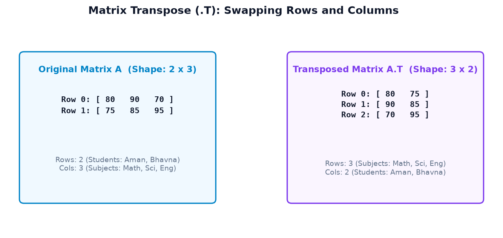
Example 1: Transposing Student Marks Matrix
import numpy as np marks = np.array([ [80, 90, 70], [75, 85, 95] ]) marks_transposed = marks.T print("Original Marks (2x3):\n", marks) print("Original Shape: ", marks.shape) print("\nTransposed Marks (3x2):\n", marks_transposed) print("Transposed Shape: ", marks_transposed.shape)
Example 2: Using Transpose to Fix Shape Compatibility
Data science me aksar do matrices ke dimensions incompatible hote hain. Transpose lagakar unhe multiplication-compatible banaya jata hai:
import numpy as np A = np.array([[1, 2], [3, 4]]) # Shape: (2, 2) B = np.array([[5, 6, 7], [8, 9, 10]]) # Shape: (2, 3) # A @ B is valid: (2, 2) @ (2, 3) -> (2, 3) valid_prod = A @ B # B @ A is INVALID because (2, 3) inner 3 != 2 # But B.T @ A is VALID: (3, 2) @ (2, 2) -> (3, 2)! transposed_prod = B.T @ A print("A @ B (Shape 2x3):\n", valid_prod) print("B.T @ A (Shape 3x2):\n", transposed_prod)
(A.T).T == A. Do baar transpose karne se matrix wapas apni original orientation me aa jata hai!
F. Special Matrices: Identity, Zero, and Diagonal Matrices
Linear algebra me calculations ko simplify aur optimize karne ke liye kuch special structure wale matrices use hote hain:
| Matrix Type | NumPy Constructor | Mathematical Property | Practical Use Case |
|---|---|---|---|
| Identity Matrix | np.eye(n) or np.identity(n) |
\(A @ I = A\) (Multiplicative Neutral) | Matrix inverse verification, basis transformations |
| Zero Matrix | np.zeros((m, n)) |
\(A + 0 = A\) | \(A @ 0 = 0\) | Buffer pre-allocation, initial weights |
| Diagonal Matrix | np.diag(vector) |
Only diagonal entries non-zero | Feature scaling, coordinate stretching, covariance |
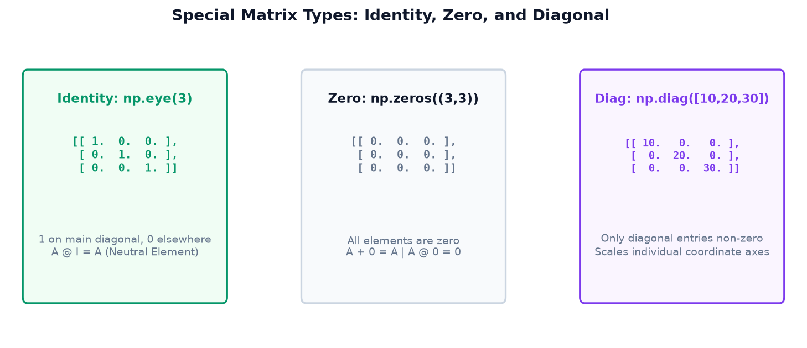
Example 1: Identity Matrix as Multiplicative Neutral
Aam arithmetic me jaise kisi number ko 1 se multiply karne par wahi number rehta hai (7 * 1 = 7), waise hi Linear Algebra me kisi matrix ko Identity Matrix (I) se multiply karne par matrix unchanged rehta hai:
import numpy as np A = np.array([ [2, 3], [4, 5] ]) # 2x2 Identity matrix I = np.eye(2) result = A @ I print("Matrix A:\n", A) print("Identity Matrix I:\n", I) print("A @ I:\n", result) print("Is A @ I exactly equal to A?", np.array_equal(result, A))
Example 2: Constructing and Extracting Diagonal Matrices
import numpy as np # 1. Construct diagonal matrix from a vector scaling_factors = np.array([10, 20, 30]) D = np.diag(scaling_factors) print("Constructed Diagonal Matrix D:\n", D) # 2. Extract diagonal entries back from matrix extracted_diagonal = np.diag(D) print("Extracted Diagonal Vector:", extracted_diagonal)
G. Determinants with np.linalg.det()
Determinant kisi Square Matrix (n x n) se juda ek special scalar number hota hai. Yeh hume batata hai ki matrix coordinate space ko kitna expand, compress, ya flip karta hai.
\[ \det(A) = ad - bc \] Diagonal entries ka product minus anti-diagonal entries ka product!
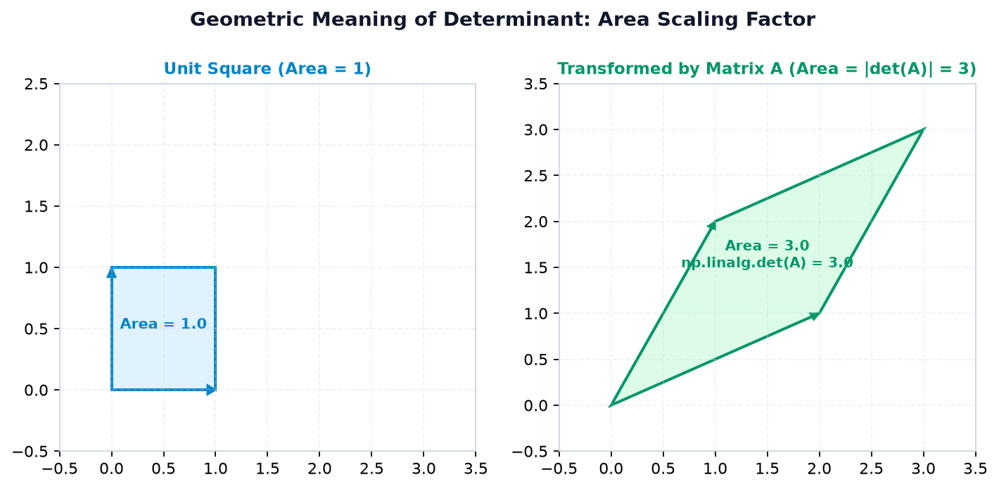
Example 1: Calculating 2x2 Determinant
import numpy as np A = np.array([ [4.0, 2.0], [3.0, 1.0] ]) det_A = np.linalg.det(A) print("Matrix A:\n", A) print("Manual calculation: (4*1) - (2*3) =", 4*1 - 2*3) print("np.linalg.det(A):", det_A)
Example 2: Invertible Matrix vs Singular Matrix (det == 0)
Agar kisi matrix ka determinant 0 ho jata hai, toh us matrix ko Singular Matrix kehte hain. Iska matlab hai ki uski rows ek doosre par dependent hain aur unka area collapse ho chuka hai:
import numpy as np # Invertible matrix: independent rows A_inv = np.array([[3.0, 1.0], [1.0, 2.0]]) # Singular matrix: Row 1 is exactly 2 * Row 0! A_sing = np.array([[2.0, 4.0], [1.0, 2.0]]) det_inv = np.linalg.det(A_inv) det_sing = np.linalg.det(A_sing) print("det(A_inv): ", det_inv, "| Invertible?", not np.isclose(det_inv, 0)) print("det(A_sing):", det_sing, "| Invertible?", not np.isclose(det_sing, 0))
det == 0.0 kabhi-kabhi 1.42e-16 jaisa tiny number ban sakta hai. Isliye det == 0 likhne ki jagah hamesha np.isclose(det, 0, atol=1e-9) use karein!
H. Matrix Rank & Linear Independence
Matrix ka Rank yeh batata hai ki us matrix me kitni Linearly Independent (genuine unique information dene wali) rows ya columns hain.
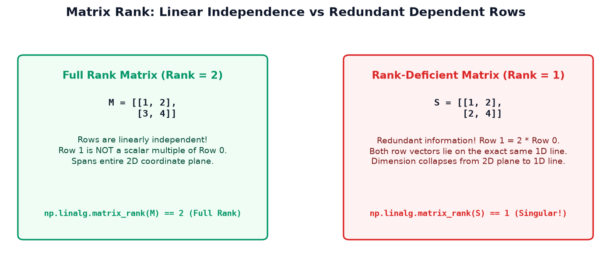
Example 1: Full-Rank Matrix
Agar ek \(2 \times 2\) matrix ke dono vectors alag-alag directions me point karte hain, toh iska rank 2 hota hai (Full Rank):
import numpy as np M = np.array([ [1, 2], [3, 4] ]) rank_M = np.linalg.matrix_rank(M) print("Matrix M:\n", M) print("Rank of M:", rank_M, "(Full Rank: spans 2D plane)")
Example 2: Rank-Deficient Matrix with Redundant Rows
Agar kisi matrix me koi row doosri row ki exact copy ya multiple ho (jaise Row 1 = 2 * Row 0), toh wo koi naya dimension add nahi karti. Matrix ka rank gir jata hai:
import numpy as np # Row 1 is exactly 2 * Row 0! S = np.array([ [1, 2], [2, 4] ]) rank_S = np.linalg.matrix_rank(S) print("Matrix S:\n", S) print("Rank of S:", rank_S, "(Rank Deficient: collapsed to 1D line)")
I. Matrix Inverses with np.linalg.inv()
Aam algebra me jaise multiplication ka ulta division hota hai (\(x \cdot x^{-1} = 1\)), waise hi Linear Algebra me kisi matrix ka ulta uska Matrix Inverse (\(A^{-1}\)) hota hai:
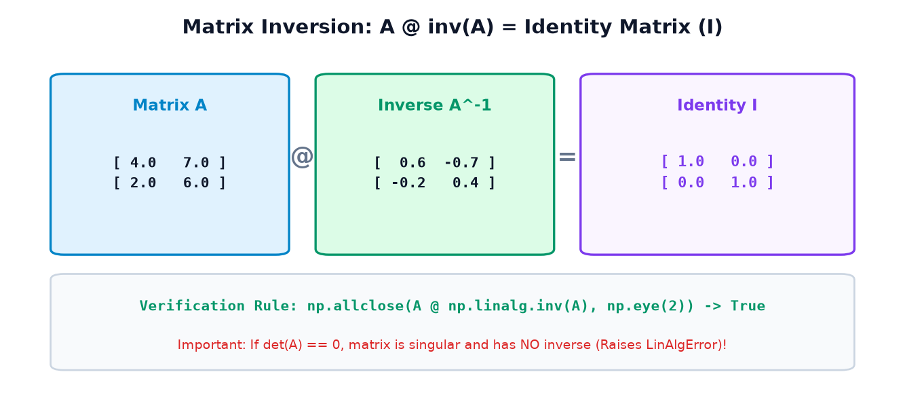
Example 1: Calculating and Verifying Matrix Inverse
import numpy as np A = np.array([ [4.0, 7.0], [2.0, 6.0] ]) A_inv = np.linalg.inv(A) print("Matrix A:\n", A) print("Inverse A^-1:\n", A_inv) print("A @ A^-1:\n", A @ A_inv) print("Verified with np.allclose:", np.allclose(A @ A_inv, np.eye(2)))
Example 2: Handling LinAlgError on Singular Matrices
Agar matrix singular ho (det == 0), toh uska mathematical inverse exist hi nahi karta. NumPy aisi situation me np.linalg.LinAlgError throw karta hai:
import numpy as np singular_mat = np.array([[2.0, 4.0], [1.0, 2.0]]) try: inv_result = np.linalg.inv(singular_mat) except np.linalg.LinAlgError as err: print("Caught Expected Exception:", err) print("Reason: Matrix determinant is 0, cannot invert!")
np.linalg.inv(A) @ b mat kijiye! Matrix inverse compute karna computationally slow (\(O(n^3)\)) aur floating-point precision ke liye bohot sensitive hota hai. Professional systems me hamesha np.linalg.solve(A, b) ka upyog kiya jata hai jo LU decomposition se 10x fast aur accurate hota hai!
J. Solving Systems of Linear Equations with np.linalg.solve()
Linear algebra ka sabse common real-world application hota hai simultaneous linear equations ko solve karna:
- \(A\): Coefficient Matrix (known coefficients)
- \(x\): Vector of Unknowns (variables to find)
- \(b\): Right-Hand-Side Vector (known targets)
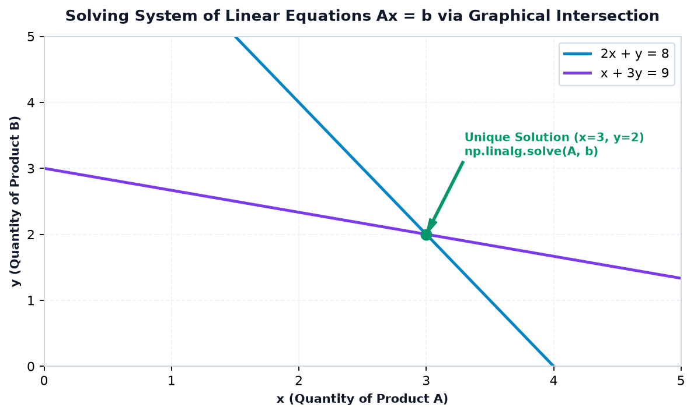
Example 1: Solving Two Simultaneous Equations
Solve the system: \(2x + y = 8\) and \(x + 3y = 9\):
import numpy as np # Equation 1: 2x + 1y = 8 # Equation 2: 1x + 3y = 9 A = np.array([ [2.0, 1.0], [1.0, 3.0] ]) b = np.array([8.0, 9.0]) # Fast, numerically stable solution solution = np.linalg.solve(A, b) print("Computed Solution (x, y):", solution) print("Verification (A @ solution):", A @ solution) print("Matches b exactly?", np.allclose(A @ solution, b))
Example 2: Carpentry Workshop Resource Planning
Ek furniture workshop do products banata hai: Chairs (\(x\)) aur Tables (\(y\)). Har item ke resource requirements hain:
- Har Chair ko 2 units Wood aur 1 hour Labor chahiye.
- Har Table ko 3 units Wood aur 2 hours Labor chahiye.
- Total Resource Available: 19 units Wood aur 11 hours Labor.
import numpy as np # Wood Constraint: 2x + 3y = 19 # Labor Constraint: 1x + 2y = 11 A_res = np.array([[2.0, 3.0], [1.0, 2.0]]) b_res = np.array([19.0, 11.0]) prod_plan = np.linalg.solve(A_res, b_res) print(f"Optimal Chairs to build: {int(prod_plan[0])}") print(f"Optimal Tables to build: {int(prod_plan[1])}")
K. Dot Product and Vector Norm (Magnitude)
Vectors ka aapas me relationship aur unki length measure karne ke liye do critical operations use hote hain:
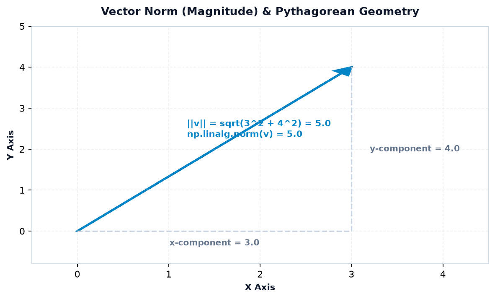
1. Vector Dot Product (np.dot)
Do 1D vectors ka dot product unke matching components ko multiply karke unka sum nikalta hai: \(\mathbf{u} \cdot \mathbf{v} = \sum u_i v_i\):
import numpy as np quantities = np.array([10, 5, 8]) prices = np.array([20, 50, 30]) # Computes (10*20) + (5*50) + (8*30) in 1 step dot_result = np.dot(quantities, prices) print("Dot product result:", dot_result)
2. Vector Magnitude / Norm (np.linalg.norm)
Vector ki length (magnitude) Euclidean distance formula (Pythagorean Theorem) se nikali jati hai: \(\|\mathbf{v}\| = \sqrt{v_1^2 + v_2^2 + \dots}\):
import numpy as np # Classic 3-4-5 right triangle vector v2d = np.array([3.0, 4.0]) mag2d = np.linalg.norm(v2d) # 3D spatial velocity vector [1, 2, 2] -> sqrt(1 + 4 + 4) = 3 v3d = np.array([1.0, 2.0, 2.0]) mag3d = np.linalg.norm(v3d) print("2D Vector [3, 4] Magnitude: ", mag2d) print("3D Vector [1, 2, 2] Magnitude: ", mag3d)
L. Eigenvalues and Eigenvectors (Introductory Level)
Data science, Machine Learning (PCA), Google PageRank, aur Computer Vision ka sabse powerful concept hai Eigenvalues and Eigenvectors. Pehli baar sunne me ye name intimidating lag sakta hai, lekin iska visual meaning behad intuitive aur beautiful hai.
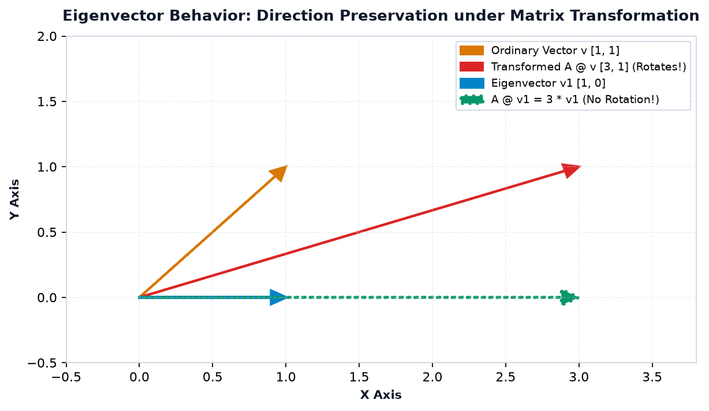
1. The Fundamental Eigen Equation
Mathematics me ise is tarah likha jata hai:
NumPy me eigenvalues aur eigenvectors calculate karne ke liye np.linalg.eig(A) function use kiya jata hai:
Example 1 — Diagonal Matrix ke Eigenvalues
Ek diagonal matrix me diagonal elements hi uske eigenvalues hote hain aur standard basis vectors \([1, 0]^T\) and \([0, 1]^T\) uske eigenvectors hote hain:
import numpy as np # Diagonal scaling matrix A_diag = np.array([ [3.0, 0.0], [0.0, 7.0] ]) eigenvals, eigenvecs = np.linalg.eig(A_diag) print("Eigenvalues:", eigenvals) print("Eigenvectors (Columns):\n", eigenvecs)
np.linalg.eig() jo 2D array return karta hai, usme eigenvectors columns me store hote hain, rows me nahi!
Matlab pehla eigenvector eigenvecs[:, 0] hai jo eigenvals[0] ke sath match karta hai, aur doosra eigenvector eigenvecs[:, 1] hai jo eigenvals[1] ke sath match karta hai.
Example 2 — Symmetric 2x2 Matrix & Numerical Verification
Aayein ek non-trivial symmetric matrix \(A = \begin{bmatrix} 4 & 1 \\ 1 & 4 \end{bmatrix}\) ka eigen-decomposition calculate karein aur verify karein ki kya \(A\mathbf{v} = \lambda\mathbf{v}\) sach me satisfy hota hai:
import numpy as np A = np.array([ [4.0, 1.0], [1.0, 4.0] ]) evals, evecs = np.linalg.eig(A) print("Computed Eigenvalues:", np.round(evals, 4)) # Verification for each eigenvalue/eigenvector pair for i in range(len(evals)): lam = evals[i] v = evecs[:, i] # Column vector! LHS = A @ v RHS = lam * v is_valid = np.allclose(LHS, RHS) print(f"Pair {i+1}: lambda={lam:.1f}, Av == lambda*v? {is_valid}")
- PCA (Principal Component Analysis): Covariance matrix ke largest eigenvalues wale eigenvectors hi data ka primary variance (main trend) capture karte hain.
- Google PageRank: Web graph matrix ke principal eigenvector se websites ki authority rank decide hoti hai.
- Structural Engineering: Bridges aur buildings ke natural vibrational frequencies eigenvalues se nikali jati hain taaki earthquake me collapse na ho.
M. Matrix Shapes & 8 Common Debugging Scenarios
Linear algebra me 90% bugs dimension mismatch aur floating-point precision traps se aate hain. Niche diye gaye 8 scenarios ko dhyan se samjhein:
Trap 1: Shape Mismatch in Matrix Multiplication (@)
import numpy as np A = np.ones((2, 2)) # shape (2, 2) B = np.ones((1, 3)) # shape (1, 3) C = A @ B # ERROR! Inner dims (2 != 1)
Kyun Hua? Matrix \(A\) ke columns (\(2\)) matrix \(B\) ke rows (\(1\)) ke barabar nahi hain.
B_correct = np.ones((2, 3)) # Inner dims now match: 2 == 2 C = A @ B_correct print("Result Shape:", C.shape) # Output: (2, 3)
Trap 2: Accidentally Using `*` Instead of `@`
Jab aap do matrices ko matrix-multiply karna chahte the lekin galti se * likh diya, toh NumPy element-wise multiply karega (ya broadcast karega), jisse mathematical disaster ho jayega:
import numpy as np A = np.array([[1, 2], [3, 4]]) B = np.array([[5, 6], [7, 8]]) print("Element-wise (*):\n", A * B) print("Matrix Mult (@):\n", A @ B)
Trap 3: Inverting a Singular Matrix (LinAlgError)
import numpy as np A = np.array([[2.0, 4.0], [1.0, 2.0]]) # Row 1 is 2 * Row 2 (Rank 1, det=0) inv_A = np.linalg.inv(A)
Correction: Hamesha rank ya determinant check karein, ya safe try...except LinAlgError block use karein.
Trap 4: Taking Determinant of a Non-Square Matrix
import numpy as np A = np.array([[1, 2, 3], [4, 5, 6]]) # Shape (2, 3) det_val = np.linalg.det(A)
Rule: Determinant sirf aur sirf Square Matrix (\(n \times n\)) ke liye hi mathematically defined hota hai!
Trap 5: Exact Equality `== 0.0` with Floating-Point Determinant
Computers me floating-point rounding errors ke karan determinant exact 0.0 aane ke bajaye 1e-16 ya -2e-17 aa sakta hai:
import numpy as np singular = np.array([[1.0, 2.0], [2.0, 4.0]]) det = np.linalg.det(singular) print("det == 0.0:", det == 0.0) # Unsafe! might be False print("np.isclose(det, 0.0):", np.isclose(det, 0.0)) # Reliable & Safe!
Trap 6: 1D Array Transpose `.T` Does Not Create a Column Vector
Beginners sochte hain ki v = np.array([1, 2, 3]) par v.T lagane se wo \((3, 1)\) column matrix ban jayega. Nahi banta! 1D array ka shape (3,) hi rehta hai:
import numpy as np v = np.array([1, 2, 3]) print("v.shape:", v.shape, "v.T.shape:", v.T.shape) # Real column matrix conversion: col_v = v[:, np.newaxis] # or v.reshape(-1, 1) print("col_v shape:", col_v.shape)
Trap 7: Misunderstanding `np.dot` vs `np.matmul` on 3D Arrays
2D matrices ke liye np.dot(A, B) aur np.matmul(A, B) same output dete hain. Lekin jab arrays 3D ya batch tensors hote hain (jaise Deep Learning me batches of images):
np.matmul(A, B)(aur@operator) batch-wise 2D matrix multiplication perform karta hai (batches ko independently multiply karta hai).np.dot(A, B)last axis of A aur second-to-last axis of B par sum over karta hai, creating a higher-rank tensor.
Trap 8: Using `np.linalg.solve()` with Non-Square Matrix
np.linalg.solve(A, b) tabhi kaam karta hai jab \(A\) square matrix (\(n \times n\)) ho aur full-rank ho. Agar rectangular system ho (\(m \neq n\)), toh np.linalg.lstsq(A, b) (least-squares solver) use karna hota hai.
N. 6 Real-Life Case Studies
Linear algebra koi dry textbook theory nahi hai. Ye world ke sabse exciting systems ka foundation hai:
Case Study 1: Retail Product Revenue Calculation
Scenario: Ek e-commerce store 3 items sell karta hai (Headphones, Smartwatches, Chargers). Quantities vector aur Price vector ka dot product ek line me total turnover de deta hai:
import numpy as np quantities = np.array([10, 5, 8]) # Units sold prices = np.array([20.0, 50.0, 30.0]) # Unit price in $ revenue = np.dot(quantities, prices) print(f"Total E-Commerce Revenue: ${revenue:.2f}")
Case Study 2: Multi-Branch Store Revenue Matrix
Scenario: Retail chain ke 3 branches hain. Har branch ne alag-alag units bechi. Matrix multiplication \((3 \times 3) @ (3,) \rightarrow (3,)\) sabhi branches ka revenue simultanously nikalta hai:
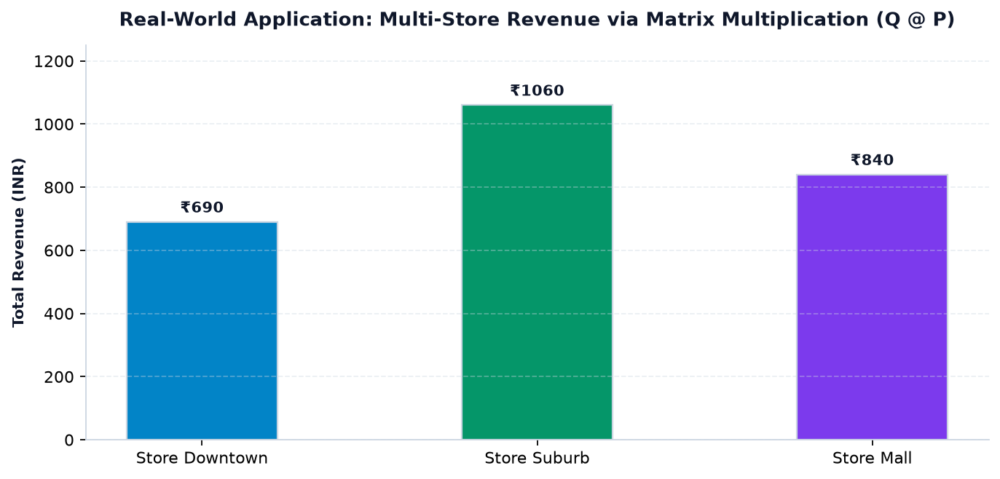
import numpy as np # Rows: [Downtown, Suburb, Airport], Cols: [Prod A, Prod B, Prod C] Q_stores = np.array([ [10, 5, 8], [15, 8, 12], [8, 10, 6] ]) prices = np.array([20.0, 50.0, 30.0]) branch_revenues = Q_stores @ prices branches = ["Downtown", "Suburb", "Airport"] for name, rev in zip(branches, branch_revenues): print(f"Branch {name}: ${rev:.2f}")
Case Study 3: Computer Graphics & 2D Geometric Transformations
Scenario: Game development aur animation engines (jaise Unity, Unreal Engine, Flutter Skia/Impeller) 2D/3D objects ko rotate, scale, aur shear karne ke liye transformation matrices multiply karte hain:
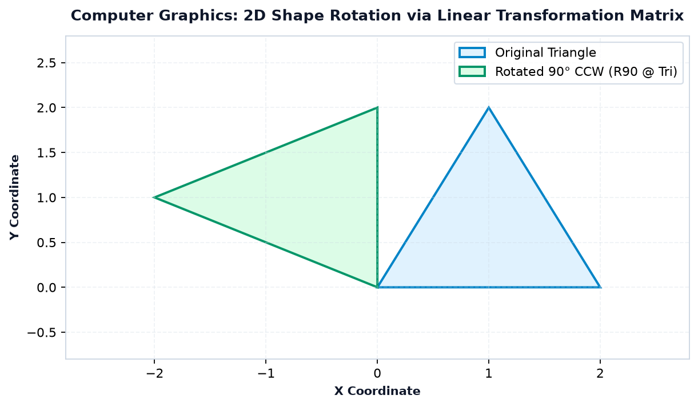
import numpy as np # 90 degrees counter-clockwise rotation matrix: [cos 90, -sin 90; sin 90, cos 90] R90 = np.array([ [0.0, -1.0], [1.0, 0.0] ]) original_pt = np.array([2.0, 1.0]) transformed_pt = R90 @ original_pt print("Original Point (x, y): ", original_pt) print("Rotated Point 90 deg: ", transformed_pt)
Case Study 4: Factory Resource Allocation
Scenario: Furniture workshop me 19 units wood aur 11 units labor available hain. Har chair ko 2 wood + 1 labor chahiye, aur har table ko 3 wood + 2 labor chahiye. Production plan find karein:
import numpy as np # [Wood constraint: 2c + 3t = 19] # [Labor constraint: 1c + 2t = 11] A = np.array([[2.0, 3.0], [1.0, 2.0]]) b = np.array([19.0, 11.0]) plan = np.linalg.solve(A, b) print(f"Chairs to manufacture: {int(plan[0])}") print(f"Tables to manufacture: {int(plan[1])}")
Case Study 5: Machine Learning Linear Hypothesis Layer
Scenario: Linear Regression aur Neural Network layers me input features \(X\) (\(N\) samples \(\times M\) features) aur weights vector \(w\) (\(M \times 1\)) ka matrix multiplication \(\hat{y} = X w\) predictions calculate karta hai:
import numpy as np # 3 samples, each having 2 features [Feature_1, Feature_2] X_features = np.array([ [1.0, 2.0], [2.0, 1.0], [3.0, 3.0] ]) # Trained model weights [w1, w2] weights = np.array([2.5, -1.0]) predictions = X_features @ weights print("Model Predictions for 3 samples:", predictions)
Case Study 6: Multi-Sensor Cross-Talk Calibration
Scenario: Robotic sensors (e.g. gyroscope and accelerometer) me slight physical interference (cross-talk) hoti hai. Calibration matrix \(C\) raw sensor signals ko true physical readings me transform karta hai:
import numpy as np raw_readings = np.array([50.0, 100.0]) # Raw [Sensor_A, Sensor_B] # Calibration decoupling matrix C_matrix = np.array([ [ 1.02, -0.01], [ 0.01, 0.99] ]) calibrated_signals = C_matrix @ raw_readings print("Calibrated Signals:", calibrated_signals)
O. Reference Table of Common Traps & Solutions
Linear algebra code likhte waqt sabhi developers in 11 traps se gujarte hain. Is reference table ko bookmark kar lein:
| Operation / Concept | Common Misconception (Trap) | Safe & Correct Python Approach | Reason & Takeaway |
|---|---|---|---|
| Matrix Mult | A * B uses asterisk |
A @ B or np.matmul(A, B) |
* performs element-wise multiplication; @ performs true matrix product. |
| Dimension Check | Assuming any two matrices multiply | Check A.shape[1] == B.shape[0] |
Inner dimensions must strictly match for row-by-column dot products. |
| 1D Dot Product | Confusing dot product with cross product | np.dot(u, v) or u @ v |
1D vectors produce a single scalar sum of component products. |
| 1D Transpose | v.T converts 1D vector to column |
v[:, np.newaxis] or v.reshape(-1, 1) |
1D arrays have shape (N,) with no second axis to swap! |
| Determinant | Calling det() on rectangular matrix |
Ensure A.shape[0] == A.shape[1] |
Determinants are only defined for square \(n \times n\) matrices. |
| Matrix Rank | Assuming full shape equals rank | np.linalg.matrix_rank(A) |
Linearly dependent rows reduce the effective rank below matrix dimension. |
| Matrix Inverse | Calling inv() on singular matrix |
Check rank == n or wrap in try...except LinAlgError |
Matrices with \(\det = 0\) have no multiplicative inverse. |
| Linear Equations | Solving via inv(A) @ b |
Use np.linalg.solve(A, b) |
solve() uses LU decomposition; faster and much less rounding noise. |
| Eigenvectors | Reading eigenvectors as rows evecs[i] |
Read columns: evecs[:, i] |
np.linalg.eig packages column vectors along axis 1. |
| Floating Comparison | Using det == 0.0 or A @ inv == I |
np.isclose() or np.allclose() |
IEEE-754 precision leaves minute residual noise (e.g. \(10^{-16}\)). |
| Dot vs Matmul | Assuming dot & matmul are identical on 3D+ |
Use matmul / @ for batched tensors |
matmul broadcasts batches cleanly; dot performs tensor contraction. |
P. Linear Algebra Function Map & Architecture
NumPy ka linear algebra ecosystem do main layers me divided hai: core array operations (operators and top-level functions) aur specialized numpy.linalg module:
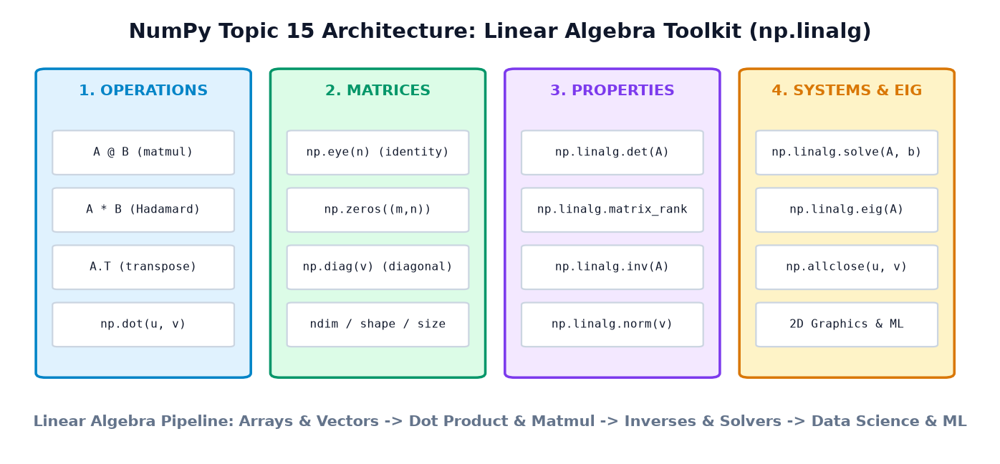
| Domain | NumPy Functions & Operators | Mathematical Role |
|---|---|---|
| Multiplication | @, np.matmul(A, B), np.dot(u, v) |
Row-by-column matrix product & vector dot product |
| Orientations | A.T, np.transpose(A) |
Swap rows and columns \((m \times n \rightarrow n \times m)\) |
| Generators | np.eye(n), np.zeros((m, n)), np.diag(v) |
Construct Identity, Zero, and Diagonal matrices |
| System Solvers | np.linalg.solve(A, b), np.linalg.lstsq(A, b) |
Exact solution for \(A\mathbf{x} = \mathbf{b}\) and least-squares regression |
| Matrix Properties | np.linalg.det(A), np.linalg.matrix_rank(A) |
Volume scaling factor and count of linearly independent rows |
| Inverses & Norms | np.linalg.inv(A), np.linalg.norm(v) |
Multiplicative inverse \(A^{-1}\) and Euclidean length \(\|\mathbf{v}\|\) |
| Spectral Analysis | np.linalg.eig(A), np.linalg.eigh(A) |
Eigenvalues and eigenvectors for general and Hermitian matrices |
Q. Hands-On Practice Suite (35 Questions)
Apni understanding ko test karein! In questions ko pehle khud solve karne ki koshish karein, phir answer details expand karke verified explanation check karein:
Category 1: Output Prediction (10 Questions)
Q1: Niche diye code ka output kya hoga?
a = np.array([2, 4]) b = np.array([3, 5]) print(np.dot(a, b))
Show Answer & Explanation
26Explanation: 1D dot product calculates \((2 \times 3) + (4 \times 5) = 6 + 20 = 26\).
Q2: Niche diye matrix multiplication ka output shape kya hoga?
A = np.zeros((3, 4)) B = np.zeros((4, 2)) C = A @ B print(C.shape)
Show Answer & Explanation
(3, 2)Explanation: Inner dimensions \((4, 4)\) cancel out, resulting in outer dimensions \((3, 2)\).
Q3: Niche diye code ka output kya hoga?
A = np.array([[1, 2], [3, 4]]) I = np.eye(2) print(np.allclose(A @ I, A))
Show Answer & Explanation
TrueExplanation: Identity matrix \(I\) kisi bhi matrix se multiply hone par matrix ko unchanged rakhta hai (\(A @ I = A\)).
Q4: Niche diye code ka output kya hoga?
v = np.array([5, 10, 15]) print(v.T.shape)
Show Answer & Explanation
(3,)Explanation: 1D NumPy array par
.T call karne se shape change nahi hota, wo (3,) hi rehta hai.
Q5: Determinant value kya aayegi?
A = np.array([[3, 0], [0, 4]]) print(int(np.linalg.det(A)))
Show Answer & Explanation
12Explanation: Diagonal matrix ka determinant diagonal entries ka product hota hai: \(3 \times 4 = 12\).
Q6: Is matrix ka rank kya hoga?
A = np.array([[1, 3], [2, 6]]) print(np.linalg.matrix_rank(A))
Show Answer & Explanation
1Explanation: Row 2 is exactly \(2 \times \text{Row 1}\), isliye dependent rows hone se rank collapse hokar 1 ho jata hai.
Q7: Vector norm ka result kya aayega?
v = np.array([6.0, 8.0]) print(np.linalg.norm(v))
Show Answer & Explanation
10.0Explanation: Pythagorean length: \(\sqrt{6^2 + 8^2} = \sqrt{36 + 64} = \sqrt{100} = 10.0\).
Q8: Niche diye diagonal matrix extraction ka output kya hoga?
A = np.array([[10, 20], [30, 40]]) print(np.diag(A))
Show Answer & Explanation
[10 40]Explanation: Jab
np.diag() ko 2D matrix diya jata hai, toh wo uske main diagonal elements ka 1D array extract karta hai.
Q9: Niche diye code me sol kya hoga?
A = np.array([[1.0, 0.0], [0.0, 1.0]]) b = np.array([4.0, 7.0]) sol = np.linalg.solve(A, b) print(sol)
Show Answer & Explanation
[4. 7.]Explanation: \(A = I\), so \(I \mathbf{x} = \mathbf{b} \implies \mathbf{x} = \mathbf{b}\).
Q10: Element-wise vs Matrix Multiplication output check:
x = np.array([[2, 0], [0, 2]]) print((x * x)[0, 0], (x @ x)[0, 0])
Show Answer & Explanation
4 4Explanation: For this specific diagonal 2x2 matrix, element-wise square and matrix multiplication both result in \(\begin{bmatrix} 4 & 0 \\ 0 & 4 \end{bmatrix}\).
Category 2: Coding Challenges (8 Questions)
Q11: Ek function likhein jo kisi square matrix ka determinant calculate kare aur agar det zero ke pass ho toh "Singular" return kare warna "Invertible".
Show Answer & Explanation
def check_invertibility(A):
det = np.linalg.det(A)
return "Singular" if np.isclose(det, 0.0) else "Invertible"
Q12: Ek 1D vector ko unit vector (magnitude = 1.0) me normalize karne ka code likhein.
Show Answer & Explanation
v = np.array([3.0, 4.0]) unit_v = v / np.linalg.norm(v) print(unit_v, np.linalg.norm(unit_v)) # [0.6 0.8], norm = 1.0
Q13: Do 2D arrays A aur B ko safely multiply karne se pehle unki shape compatibility verify karne wala function banayein.
Show Answer & Explanation
def safe_matmul(A, B):
if A.shape[1] != B.shape[0]:
raise ValueError(f"Incompatible shapes: {A.shape} and {B.shape}")
return A @ B
Q14: Ek \(3 \times 3\) identity matrix banayein jisme diagonal elements 5 ho (Scalar matrix).
Show Answer & Explanation
scalar_matrix = 5.0 * np.eye(3) # Or: np.diag([5.0, 5.0, 5.0])
Q15: System of equations \(3x + 2y = 12\) aur \(x - y = 1\) ko NumPy se solve karein.
Show Answer & Explanation
A = np.array([[3.0, 2.0], [1.0, -1.0]])
b = np.array([12.0, 1.0])
sol = np.linalg.solve(A, b)
print("x =", sol[0], "y =", sol[1]) # x = 2.8, y = 1.8
Q16: Ek 2D matrix ka Trace (sum of main diagonal elements) calculate karne ke do alag tareeqe likhein.
Show Answer & Explanation
A = np.array([[1, 2], [3, 4]]) # Method 1: trace1 = np.trace(A) # Method 2: trace2 = np.sum(np.diag(A)) print(trace1 == trace2) # True (value 5)
Q17: Ek function likhein jo check kare ki kya matrix Symmetric hai (\(A == A^T\)).
Show Answer & Explanation
def is_symmetric(A):
return np.allclose(A, A.T)
Q18: Given matrix \(A\), verify karein ki kya \(A @ A^{-1} \approx I\).
Show Answer & Explanation
A = np.array([[4.0, 7.0], [2.0, 6.0]])
A_inv = np.linalg.inv(A)
identity_test = np.allclose(A @ A_inv, np.eye(2))
print("Inverse identity holds:", identity_test) # True
Category 3: Debugging Challenges (6 Questions)
Q19: Is code me kya error hai aur use kaise theek karein?
A = np.array([[1, 2], [3, 4]]) b = np.array([5, 6, 7]) x = np.linalg.solve(A, b)
Show Answer & Explanation
Fix: \(b\) must have shape
(2,) to match \(A\)'s 2 equations.
Q20: Niche diye code me float precision trap ko fix karein:
A = np.array([[1.0, 2.0], [2.0, 4.0]])
if np.linalg.det(A) == 0:
print("Singular")
Show Answer & Explanation
1e-17), causing exact == 0 to evaluate to False.Fix: Use
if np.isclose(np.linalg.det(A), 0.0):.
Q21: Developer 1D vector ko column banana chahta tha, lekin ye code fail ho raha hai:
v = np.array([10, 20, 30]) v_col = v.T assert v_col.shape == (3, 1) # AssertionError!
Show Answer & Explanation
.T shape change nahi karta.Fix:
v_col = v[:, np.newaxis] ya v.reshape(3, 1).
Q22: Is code me LinAlgError handle karein:
A = np.array([[1, 2], [2, 4]]) inv = np.linalg.inv(A)
Show Answer & Explanation
try:
inv = np.linalg.inv(A)
except np.linalg.LinAlgError:
print("Matrix is singular and cannot be inverted!")
Q23: Developer ne pehla eigenvector lene ke liye evecs[0] likha:
evals, evecs = np.linalg.eig(A) first_vec = evecs[0] # TRAP!
Show Answer & Explanation
np.linalg.eig returns eigenvectors as columns, not rows! evecs[0] returns the first row, which is incorrect.Fix:
first_vec = evecs[:, 0].
Q24: Square matrix check missing:
A = np.ones((3, 4)) det = np.linalg.det(A) # Crash!
Show Answer & Explanation
Fix: Ensure
A.shape[0] == A.shape[1] before invoking det().
Category 4: Multiple Choice Questions (8 Questions)
Q25: Agar matrix \(A\) ka shape \((4, 5)\) hai aur matrix \(B\) ka shape \((5, 2)\) hai, toh \(A @ B\) ka shape kya hoga?
a) (4, 5)
b) (5, 5)
c) (4, 2)
d) (2, 4)
Show Answer & Explanation
Inner dimension 5 matches; outer dimensions 4 and 2 become the resulting shape.
Q26: Kaun sa operator NumPy me true matrix multiplication ke liye use hota hai?
a) *
b) @
c) ^
d) &
Show Answer & Explanation
@ operator Python 3.5+ me matrix multiplication ke liye dedicate kiya gaya hai.
Q27: Agar kisi square matrix ka determinant zero ho, toh wo matrix kya kehlata hai?
a) Identity matrix
b) Singular matrix
c) Orthogonal matrix
d) Diagonal matrix
Show Answer & Explanation
Singular matrices are non-invertible because their determinant is 0.
Q28: Vector \([3, 4]\) ka Euclidean norm (magnitude) kya hai?
a) 7
b) 5
c) 25
d) 12
Show Answer & Explanation
\(\sqrt{3^2 + 4^2} = \sqrt{9 + 16} = 5\).
Q29: Linear system \(A\mathbf{x} = \mathbf{b}\) solve karne ke liye kaun sa method numerically superior aur fast mana jata hai?
a) np.linalg.inv(A) @ b
b) np.linalg.solve(A, b)
c) b / A
d) np.linalg.det(A) * b
Show Answer & Explanation
solve() direct matrix inversion ke comparison me numerical rounding errors aur computation time dono kam karta hai.
Q30: \(3 \times 3\) Identity matrix create karne ke liye kaun sa function use hoga?
a) np.identity_matrix(3)
b) np.eye(3)
c) np.ones_diag(3)
d) np.diag_ones(3)
Show Answer & Explanation
np.identity(3)).
Q31: Matrix rank kya represent karta hai?
a) Total elements in matrix
b) Number of linearly independent rows or columns
c) Maximum value in matrix
d) Diagonal sum
Show Answer & Explanation
Q32: Eigen equation \(A\mathbf{v} = \lambda\mathbf{v}\) me \(\lambda\) kya represent karta hai?
a) Eigenvector
b) Scalar stretch factor (Eigenvalue)
c) Matrix determinant
d) Matrix inverse
Show Answer & Explanation
Category 5: Real-World Mini-Challenges (3 Challenges)
Q33 (Retail Challenge): Ek bookstore ne Monday ko 10 Novels aur 5 Comics bechi, aur Tuesday ko 8 Novels aur 12 Comics bechi. Novel price $15 aur Comic price $8 hai. Ek single matrix multiplication se Monday aur Tuesday ka alag-alag revenue nikalein.
Show Answer & Explanation
import numpy as np
sales = np.array([
[10, 5], # Monday
[8, 12] # Tuesday
])
prices = np.array([15.0, 8.0])
revs = sales @ prices
print("Monday Revenue: $", revs[0]) # 10*15 + 5*8 = 190.0
print("Tuesday Revenue: $", revs[1]) # 8*15 + 12*8 = 216.0
Q34 (Nutritional Diet Challenge): Meal A me 2g protein aur 5g carbs hain; Meal B me 4g protein aur 2g carbs hain. Patient ko total 26g protein aur 25g carbs chahiye. Dono meals ki required servings calculate karein.
Show Answer & Explanation
import numpy as np
# 2*A + 4*B = 26
# 5*A + 2*B = 25
A_nutr = np.array([[2.0, 4.0], [5.0, 2.0]])
b_nutr = np.array([26.0, 25.0])
servings = np.linalg.solve(A_nutr, b_nutr)
print(f"Meal A servings: {servings[0]:.1f}") # 3.0
print(f"Meal B servings: {servings[1]:.1f}") # 5.0
Q35 (Cosine Similarity Challenge): Do user preference vectors \(u_1 = [5, 1, 2]\) aur \(u_2 = [4, 2, 3]\) ke beech ka cosine similarity angle nikaal kar batayein ki unki choices kitni similar hain: \(\cos(\theta) = \frac{\mathbf{u}_1 \cdot \mathbf{u}_2}{\|\mathbf{u}_1\| \|\mathbf{u}_2\|}\).
Show Answer & Explanation
import numpy as np
u1 = np.array([5.0, 1.0, 2.0])
u2 = np.array([4.0, 2.0, 3.0])
dot_prod = np.dot(u1, u2)
norm_u1 = np.linalg.norm(u1)
norm_u2 = np.linalg.norm(u2)
cos_sim = dot_prod / (norm_u1 * norm_u2)
print(f"Cosine Similarity: {cos_sim:.4f}") # 28 / (sqrt(30)*sqrt(29)) = 0.9492
R. Mini-Project: Smart Store Matrix Analyzer
Ab tak seekhe gaye sabhi core linear algebra concepts ko ek complete real-world enterprise mini-project me combine karte hain. Hum ek complete retail analytics engine build karenge jo 3 retail stores ke sales data, multi-product pricing, cost margins, resource allocation, aur graphical transformations ko handle karega.
- 3 Stores \(\times\) 4 Products ki sales quantities ko \(3 \times 4\) matrix me represent karna.
- Product prices vector \((4,)\) aur unit cost vector \((4,)\) define karna.
- Matrix multiplication (
@) se Store-wise Revenue aur Store-wise Profit calculate karna. - Dual-verification: Store-level revenues ka sum aur total product sales ka dot product exactly equal prove karna.
- Data orientation swap ke liye Matrix Transpose (
.T) use karna. - Warehouse supply resource constraints ko
np.linalg.solve()se resolve karna. - 2D store coordinate rotation transformation demonstrate karna.
import numpy as np print("=== CODEVERSE SMART STORE MATRIX ANALYZER ===") # 1. Sales Matrix (3 Stores x 4 Products) # Rows: [Store Downtown, Store Suburb, Store Mall] # Cols: [Product A, Product B, Product C, Product D] Q = np.array([ [20, 15, 30, 10], # Downtown [25, 20, 15, 30], # Suburb [10, 30, 20, 15] # Mall ]) prices = np.array([10.0, 25.0, 15.0, 50.0]) costs = np.array([ 6.0, 15.0, 9.0, 30.0]) print(f"Sales Matrix Shape: {Q.shape} (Stores x Products)") print(f"Prices Vector Shape: {prices.shape}") # 2. Revenue per Store using Matrix Multiplication (@) revenue_per_store = Q @ prices store_names = ["Downtown", "Suburb", "Mall"] print("\n--- Store-wise Revenue ---") for name, rev in zip(store_names, revenue_per_store): print(f"{name:10s} Store Revenue: ${rev:,.2f}") # 3. Dual-Calculation Total Revenue Verification total_rev_method1 = np.sum(revenue_per_store) total_quantities = np.sum(Q, axis=0) # Total sold per product total_rev_method2 = np.dot(total_quantities, prices) print(f"\nTotal Revenue (Method 1 - Sum of Stores): ${total_rev_method1:,.2f}") print(f"Total Revenue (Method 2 - Products Dot Price): ${total_rev_method2:,.2f}") print(f"Are both methods mathematically equal? {total_rev_method1 == total_rev_method2}") # 4. Profitability Analysis per Store profit_margins = prices - costs # [4.0, 10.0, 6.0, 20.0] profit_per_store = Q @ profit_margins print("\n--- Store-wise Net Profit ---") for name, profit in zip(store_names, profit_per_store): margin_pct = (profit / revenue_per_store[store_names.index(name)]) * 100 print(f"{name:10s} Profit: ${profit:,.2f} (Margin: {margin_pct:.1f}%)") # 5. Matrix Transpose for Product-Centric View Q_transposed = Q.T print(f"\nTransposed Matrix Shape: {Q_transposed.shape} (Products x Stores)") # 6. Logistics Warehouse Resource Allocation (np.linalg.solve) # Two regional distribution centers (w1, w2) must supply 70 units of Prod A and 110 of Prod B: # DC1 supplies 1 unit of A and 3 units of B per crate # DC2 supplies 2 units of A and 1 unit of B per crate # Equation: 1*w1 + 2*w2 = 70; 3*w1 + 1*w2 = 110 A_logistics = np.array([[1.0, 2.0], [3.0, 1.0]]) b_logistics = np.array([70.0, 110.0]) dc_shipments = np.linalg.solve(A_logistics, b_logistics) print("\n--- Logistics Supply Optimization ---") print(f"Crates to dispatch from DC 1: {int(dc_shipments[0])}") print(f"Crates to dispatch from DC 2: {int(dc_shipments[1])}") # 7. 2D Map Coordinate Transformation (Rotate Suburb Store coords by 90 deg) suburb_coords = np.array([4.0, 2.0]) R90 = np.array([[0.0, -1.0], [1.0, 0.0]]) rotated_coords = R90 @ suburb_coords print(f"\nStore Map Original (x, y): {suburb_coords} -> Rotated 90 deg: {rotated_coords}")
Detailed Step-by-Step Code Walkthrough:
- Lines 9–17 (Data Modeling): Humne sales data ko \(3 \times 4\) NumPy array me represent kiya jahan rows 3 stores ko aur columns 4 products ko darshate hain. Prices aur costs 1D vectors hain length 4 ke sath.
- Lines 20–26 (Matrix Multiplication):
Q @ pricesexecute hote hi NumPy har store ke 4 product sales ko unke prices ke sath dot product karke \((3,)\) revenue vector deta hai: Downtown ($1,525), Suburb ($2,475), aur Mall ($1,900). - Lines 29–35 (Dual-Calculation Verification): Store-wise revenue ka sum ($5,900) aur pure chain me total product quantities ka price vector ke sath dot product dono exactly $5,900 aate hain. Ye prove karta hai ki matrix multiplication distributive property follow karta hai.
- Lines 38–44 (Profit Margins):
prices - costsse element-wise margin nikal karQ @ profit_marginscalculate kiya, jisse har store ka exact net dollar profit aur margin percentage derive ho gaya. - Lines 47–49 (Transposition):
Q.Tmatrix ko \((4 \times 3)\) me convert kar deta hai, jisse inventory manager product-wise stores ka analysis kar sakta hai. - Lines 52–61 (Linear System Solver):
np.linalg.solve(A_logistics, b_logistics)ne 2 simultaneous distribution equations ko solve karke bataya ki Distribution Center 1 se 30 crates aur DC 2 se 20 crates dispatch hone chahiye. - Lines 64–68 (2D Coordinate Transformation): 2D rotation matrix \(R_{90}\) multiply karke store coordinates ko map coordinate space me rotate kiya gaya.
S. Summary & Quick Reference Guide
Congratulations! Aapne NumPy ke sabse important aur foundational mathematical module Linear Algebra ko master kar liya hai. Aayein core takeaways ko ek baar review karein:
| Concept | Key Formula / Syntax | Mental Model |
|---|---|---|
| Scalars, Vectors, Matrices | ndim=0, ndim=1, ndim=2 |
Single number \(\rightarrow\) 1D list of items \(\rightarrow\) 2D table of rows & columns. |
| Matrix Multiplication | A @ B or np.matmul(A, B) |
Rows of A combine with columns of B. Inner dimensions must match \((m, k) \times (k, p)\). |
| Transpose | A.T or np.transpose(A) |
Flip rows into columns. Swap axis 0 and axis 1. |
| Determinant | np.linalg.det(A) |
Area/volume scaling factor. If 0, matrix collapses dimensions and has no inverse. |
| Matrix Rank | np.linalg.matrix_rank(A) |
Number of truly independent rows. Full rank means no redundant information. |
| Matrix Inverse | np.linalg.inv(A) |
Un-does matrix transformation (\(A^{-1}A = I\)). Only exists if \(\det(A) \neq 0\). |
| Linear Systems | np.linalg.solve(A, b) |
Finds exact unknowns \(\mathbf{x}\) in \(A\mathbf{x} = \mathbf{b}\) without unstable inversion. |
| Vector Magnitude | np.linalg.norm(v) |
Euclidean distance / length of vector from origin. |
| Eigen Decomposition | evals, evecs = np.linalg.eig(A) |
Special directional axes where transformation only stretches without turning (\(A\mathbf{v} = \lambda\mathbf{v}\)). |
Linear Algebra data science, Machine Learning, Deep Learning (PyTorch & TensorFlow), Computer Vision, aur Robotics ka fundamental driver hai. In concepts ki practice karte rahein, aur CodeVerse ke agle topics me real-world algorithms ko confidently conquer karein!